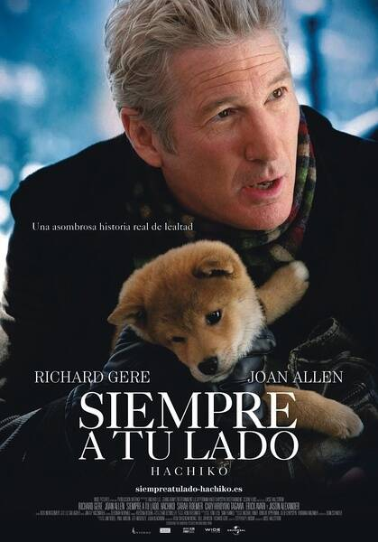

八公（Forest 饰）是一条谜一样的犬，因为没有人知道它从哪里来。教授帕克（理查·基尔 Richard Gere 饰）在小镇的火车站拣到一只走失的小狗，冥冥中似乎注定小狗和帕克教授有着某种缘分，帕克一抱起这只小狗就再也放不下来，最终，帕克对小狗八公的疼爱感化了起初极力反对养狗的妻子卡特（琼·艾伦 Joan Allen 饰）。八公在帕克的呵护下慢慢长大，帕克上班时八公会一直把他送到车站，下班时八公也会早早便爬在车站等候，八公的忠诚让小镇的人家对它更加疼爱。有一天，八公在帕克要上班时表现异常，居然玩起了以往从来不会的捡球游戏，八公的表现让帕克非常满意，可是就是在那天，帕克因病去世。帕克的妻子、女儿安迪（萨拉·罗默尔 Sarah Roemer 饰）及女婿迈克尔（罗比·萨布莱特 Robbie Sublett 饰）怀着无比沉痛的心情埋葬了帕克，可是不明就里的八公却依然每天傍晚五点准时守候在小站的门前，等待着主人归来……
| 角色 | 演员 |
|---|---|
| Parker Wilson | 理查·基尔/Richard Gere |
| Andy Wilson | 萨拉·罗默尔/Sarah Roemer |
| Cate Wilson | 琼·艾伦 |
| Carl | 杰森·亚历山大/Jason Alexander |
| Ken | 凯里-川田博之/Cary-Hiroyuki Tagawa |
| 出品人： | InfernoDistribution |
|---|---|
| 制作人： | 蒂莫西·帕特里克、梅尔夫·戴维斯、理查·基尔、威廉·J·约翰逊、汤姆·卢斯 |
| 导演： | 莱塞·霍尔斯道姆 |
| 副导演： | 汤姆·卢斯、伊丽莎白·麦克斯旺 |
| 编剧： | Stephen P. Lindsey、新藤兼人(Kaneto Shindo) |
帕克·威尔逊
演员 理查·基尔
一位大学教授，在小镇在车站上偶遇一只可怜的小秋田犬，它孤苦无依的身影惹起他的怜悯，他本来想把这条犬交给火车站的管理处被拒绝后，担心小狗在动物收容所会吃苦头，帕克就把它带回了家。因为找不到幼犬的主人所以他只能把它一直养大。
安迪·威尔森
演员 萨拉·罗默尔
帕克·威尔逊的女儿，和父亲一样，她由衷地喜爱“小八”，在她的影响下母亲最终决定让“小八”成为家庭一员。
凯特·威尔逊
演员 琼·艾伦
帕克·威尔逊的妻子，一开始极力反对丈夫把从车站捡来的狗寄养在家里，并想尽办法要把它送走，但看到丈夫和女儿对它无微不至地照顾和由衷地喜爱，终于决定让它成为家庭一员。
八公
演员 Forest
一条憨厚守信的秋田犬，一直坚守着它和主人的约定，每天都风雨无阻等待主人回家。即使有一天它会失望而归，即便它逐渐衰老，也不曾想要放弃哪怕一丁点的希望。
从预告片看，《忠犬八公的故事》虽然全好莱坞班底制作，取景也在美国本土，却拍出了日本电影独有的温馨与隽永。与美式人狗情的电影《马利和我》的欢闹作风相比，《忠犬八公的故事》则更具催泪效果。导演莱塞·霍尔斯道姆笑着这么说:"希望电影温馨但不滥情，因此避开许多洒狗血的桥段。因为我希望它是一部喜剧，不应过于强调悲伤，而是单纯呈现人与狗之间的情谊。"尽管如此，理察·基尔拿到剧本时，还是因为故事中的情节感动落泪，而且一哭再哭。他说:"原本以为自己太过情绪化才哭，但隔几天再看一次，还是哭了。"
据悉，现年59岁的理查·基尔也是一位爱狗人士，他在影片中饰演教授一角，他相信这部感人的影片将会取得成功，他表示:"这是一部我希望我的孩子们也能看的电影。这是一部跨越语言障碍、全世界观众都能看懂的影片。"
影片改编发生在日本的真实故事，这个真实的故事发生在1924年，秋田犬八公被它的主人上野秀三郎带到东京，上野秀三郎是东京大学农业系的教授。每天早上，八公都在家门口目送着上野秀三郎出门上班，然后傍晚时分便到附近的涩谷火车站迎接他下班回家。这样的幸福生活一直持续到1925年，上野秀三郎在大学里突然中风，抢救无效。他死了再也没有回到那个火车站，可是八公依然忠实地等着他等了九年 。
八公的故事曾在1987年拍成日本电影，由仲代达矢主演，该片当年曾在日本引起轰动，创造了40亿日元的票房收入。而此次新版本由《浓情威尼斯》和《狗脸的岁月》的导演莱塞·霍尔斯道姆执导，而在影片中的教授一角由理查·基尔饰演 。